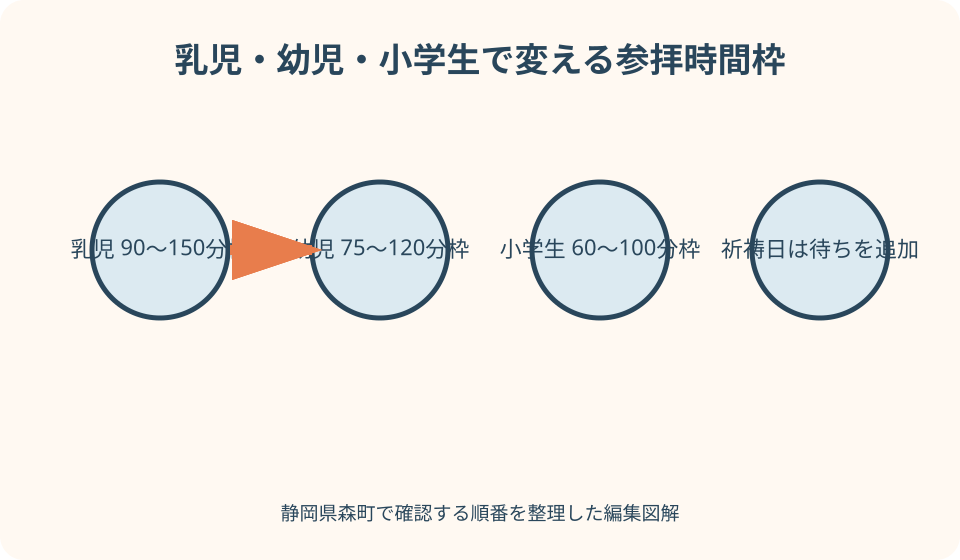
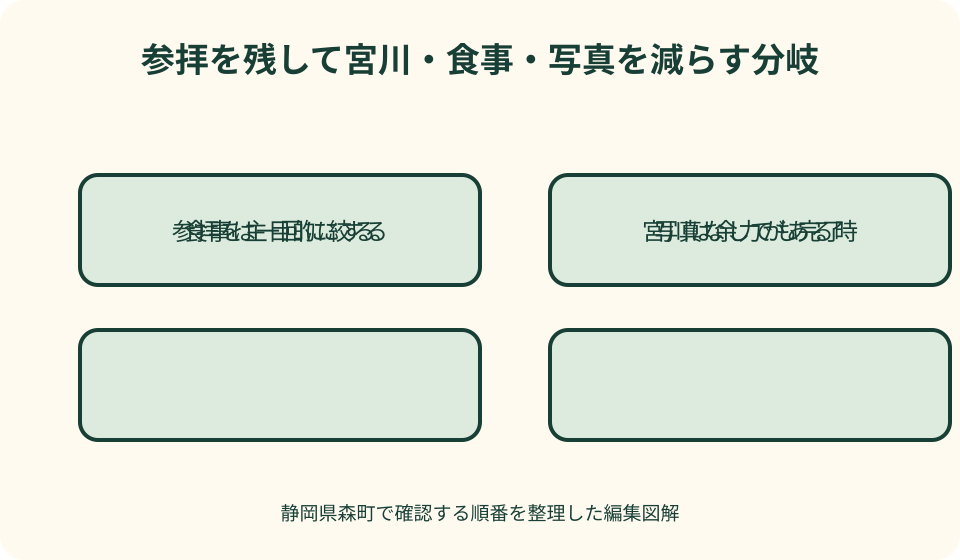

小國神社・子連れ参拝｜最終確認 2026-08-10
静岡県森町・小國神社を子連れで参拝｜年齢別の時間と休憩の組み方
子連れの小國神社参拝は、駐車して社殿へ進む時間だけでは組めません。授乳、おむつ、トイレ、着替え、祈祷受付、待ち時間、食事、帰路を一続きで考えます。神社公式は参集殿の授乳室、参拝者休憩所とお手洗い、初宮詣・七五三詣の祈祷を案内しています。一方、ベビーカーで通れる全経路や段差の詳細までは一律に示していないため、当日の工事・混雑・天候を含め、社務所へ確認して使える動線を選びます。

参拝の主目的を家族で一つにする
最初に、通常参拝、初宮詣、七五三詣、季節の散策のどれを主目的にするか決めます。全部を同じ重要度で並べると、子どもの眠気や空腹が出ても予定を減らしにくくなります。祈祷を受ける日なら祈祷と参拝を残し、宮川、食事、買い物は余力がある場合だけ加えます。
乳児と幼児では必要な準備が違います。「子ども二人」とまとめず、月齢、歩ける距離、昼寝、トイレ、食事、アレルギー、着替えの必要を一人ずつ書きます。祖父母も一緒なら、階段、椅子、薬、寒暖への対応を同じ欄へ加えます。
子どもに参拝の目的を年齢に合う言葉で伝えます。幼児には、静かに歩く場所、鳥居の前で一度止まる、神前では大声を出さないという三つに絞ります。小学生には、小國神社が遠江国一宮として大切にされてきた場所であることも説明できます。
家族写真を主目的にし過ぎません。晴れ着や子どもの表情が整うまで待つと、祈祷受付や授乳が後ろへずれます。写真は到着直後、参拝後、帰る前の候補を作り、混雑や雨で一回も撮れなくても参拝が成立する予定にします。
筆者が子どもを連れて利用した体験談ではありません。2026年8月10日に確認した神社と森町の公式情報から設備と手順を整理し、公式にないベビーカー通行や待ち時間を事実として補いません。最新の現場案内を家族の最終判断にします。
年齢別の時間枠を公式所要時間と区別する
乳児連れは、駐車から車へ戻るまで90〜150分を予定表の枠として確保します。授乳、おむつ、抱き替え、荷物整理で移動を止める時間があるためです。この幅は到着を保証する公式値ではなく、参拝だけで終えたときにも焦らず帰るための編集上の目安です。
一歳から未就学の幼児は75〜120分を置きます。自分で歩く時間と抱っこの時間が混ざり、トイレ、空腹、興味を持った場所で止まるためです。歩けるから短時間で済むとは考えず、帰りに疲れて動けなくなる可能性を含めます。
小学生は60〜100分を一つの枠にします。歩行は安定しても、参拝作法の説明、授与所、兄弟を待つ時間が増える場合があります。年上の子に乳幼児の世話を任せず、自分の参拝を落ち着いてできる時間を残します。
祈祷を受ける日は、上の枠に追加時間を考えます。神社公式は祈祷自体の所要を20〜30分程度と案内していますが、受付後の神札準備や祭事による待ち時間があると説明しています。受付から退出までが必ず30分以内という意味にはしません。
混雑期は時間枠を延ばすだけでなく、予定を減らします。正月、七五三の集中日、紅葉期は、駐車、受付、トイレ、食事に列ができる可能性があります。滞在を長くして全部こなすより、参拝だけを残して早めに帰る方が、子どもの負担を抑えられます。
駐車場から参道までの移動を確認する
神社公式の交通案内は無料駐車場約700台と複数区画を掲載し、門前までの徒歩目安を示しています。総数が多いことと、正面に近い区画へ停められることは別です。子連れでは、誘導された区画から荷物と子どもを安全に運べるかを見ます。
車を停める前に乳児だけを路上で降ろしたり、幼児を駐車区画に立たせたりしません。大人が二人なら、一人が子どもを車内で見守り、もう一人がベビーカーと荷物を出します。祖父母がいる場合も、車路で待たせず歩行側へ全員で移ります。
紅葉、正月、七五三などは一部区画の運用や周辺交通が通常と異なる場合があります。以前使えた近い区画へ固執せず、案内員と入口表示に従います。参道まで遠いと判断したら、参拝以外を取りやめる、同行者が休めるまで待つ、別日に変える選択を持ちます。
公共交通では、神社公式がJR袋井駅または天竜浜名湖鉄道の遠州森駅から秋葉バス開運線を案内しています。森町公式にも鉄道、民間バス、タクシーへの確認入口があります。子連れでは運行日、往復便、乗り場だけでなく、ベビーカーや大きな荷物の扱いを運行事業者へ確認します。
帰りの移動を到着時に決めます。駐車区画の名前と写真、バス停の場所、集合地点を大人同士で共有します。子どもが眠った後に道を探す負担を減らすため、帰りはどの入口を使い、どこで着替えや荷物整理をするかまで先に決めます。
ベビーカーと段差は写真から可否を決めない
確認した神社公式ページには、境内のすべての参拝経路をベビーカーで通れるという一律の説明はありません。参道の一部が平らに見える写真だけで、駐車区画から拝殿、祈祷会場、休憩場所まで連続して移動できるとは判断しません。
訪問前に、ベビーカーの大きさ、子どもの月齢、祈祷の有無を伝え、推奨される入口と置き場所を神社へ尋ねます。当日は工事、祭典、混雑、雨で利用しやすい動線が変わる場合があります。現地で難しいと言われたら、抱っこひもへ切り替えるか参拝範囲を縮めます。
抱っこひもを代案にする場合も、長時間なら肩と腰へ負担がかかります。雨具、授与品、子どもの荷物を同じ大人へ集めず、もう一人が持ちます。前向き抱っこで足元が見にくい場面では、階段や濡れた落葉を同行者が先に確認します。
ベビーカーを置く場所は、通路、鳥居、祈祷受付の前を避けます。勝手に壁際へ寄せず、職員へ指定場所を尋ね、貴重品を残しません。子どもを乗せたまま坂や段差の近くで手を離さず、ブレーキだけを見守りの代わりにしません。
晴れ着の七五三でも足元を優先します。草履や慣れない靴は、駐車場からの歩行で疲れやすく、雨では滑る可能性があります。撮影場所まで普段の靴で進み履き替える方法を検討し、履物を替える場所と袋を用意します。
トイレ・授乳・休憩を先に地図へ置く
神社公式の施設案内は、参集殿に祈祷前の控室と授乳室があると説明しています。授乳室があることは確認できますが、いつでも誰でも予約なしで使えるか、混雑時の待ち、調乳設備、おむつ替え設備までは同じ記述から確定できません。利用条件を事前または受付で尋ねます。
参道入口右手にはお手洗いがあり、正面駐車場にも隣接すると案内されています。参拝者休憩所の一階にもお手洗いが併設されます。子ども用便座、おむつ替え台、個室の広さは公式説明だけで判断せず、必要な補助具を持つか現地確認します。
車を降りたら、子どもが行きたいと言う前にトイレの位置を確認します。祈祷受付後や参道の途中で急いで戻らずに済むよう、乳幼児は到着直後におむつや排せつを整えます。混雑時は列を見て、先に済ませる大人と受付を確認する大人へ分かれます。
参拝者休憩所は、休む場所として神社公式に掲載されています。ただし席が空いていることや、飲食、持込、利用時間を本記事では保証しません。子どもが眠った場合に長時間占有せず、施設の案内に従い、空いていなければ車へ戻る代案を使います。
持ち物は、おむつ、着替え、タオル、密閉袋、授乳ケープ、必要なミルク用品、飲料、常用薬を一つの鞄へまとめます。設備があるから消耗品まで用意されているとは考えません。ごみを捨てられると推測せず、使用済み品を持ち帰る袋を準備します。

参拝作法を子どもの動きへ置き換える
神社公式の参拝作法は、手水と二拝二拍手一拝を説明しています。子どもに全手順を完璧にさせることより、前の人を押さない、水を遊びに使わない、神前で一度落ち着くことを優先します。大人が短く見本を見せ、できる範囲で一緒に行います。
手水では、柄杓や水の扱いを大人が支えます。子どもの口へ直接柄杓を近づけず、混雑時に何度もやり直しません。衛生上の運用や使用方法が現地表示で変わっていれば、その案内に従い、手水を行えないことを参拝失敗とは考えません。
神前の列では、幼児を大人の間に置きます。列から離れて走った子を大声で追う状況になる前に、手をつなぐ、抱く、いったん列を外れる選択をします。順番を譲っても参拝の価値は変わりません。落ち着いてから最後尾へ戻ります。
小学生には、願い事だけでなく、来られたことへの感謝を自分の言葉で伝える時間を作れます。長い説明を神前で始めず、参道を歩く間に話します。兄弟で作法を競わせず、年齢ごとにできる動きを認めます。
泣き止まない乳児や体調の悪い子を無理に社殿前へ連れて行きません。大人が交代で参拝する、少し離れた静かな場所で待つ、今日は鳥居付近から挨拶して帰る方法があります。予定どおりの位置まで進むことより、子どもの安全と周囲への配慮を優先します。
初宮詣と七五三は受付から帰宅まで組む
神社公式は、初宮詣を新生児誕生の奉告と成長を祈る祈願、七五三詣を子どもの成長を奉告し感謝を捧げる祈願として案内しています。写真撮影や会食が目立つ日でも、祈りの目的を家族で共有し、子どもの体調に合わせて儀礼以外を減らします。
祈祷受付は拝殿正面左側と案内され、通常の受付時間、祈祷料、祭儀の目安が公式に掲載されています。事前予約を受けていないという記載もあります。日付、祭典、団体、最新運用で状況が変わる可能性があるため、訪問前に現在の案内を読み直します。
初宮詣は産後の保護者と新生児の健康を第一にします。慣習の日数へ無理に合わせず、医療者の助言と家族の回復を優先します。授乳、吐き戻し、おむつ、体温調整の時間を増やし、祖父母との写真や食事を別日に分けることも検討します。
七五三は、神社公式FAQで数え年と満年齢のどちらでも行われると案内されています。家族行事の都合だけでなく、子どもが晴れ着で歩けるか、祈祷中に座っていられるかを考えます。年齢の決め方や当年の授与内容は最新案内へ戻ります。
祈祷後は授与品、子どもの荷物、履物を大人が確認します。子どもを写真場所へ急がせず、トイレ、授乳、休憩を挟みます。会食の予約がある場合も、神社から店までの移動と着替えを含め、遅れる場合の連絡方法を事前に決めます。
宮川は散策だけを第一候補にする
小國神社の境内を流れる宮川は、季節の自然を感じられる場所です。ただし、参拝と川辺散策は別の体力と見守りを必要とします。初宮詣や七五三の日に必ず加えず、子どもが普段の靴と服で、手をつないで歩ける場合だけ短く見ます。
水遊びに関する過去の神社案内があっても、当日に利用できるとは限りません。増水、滑り、工事、立入表示を現地で確認し、分からなければ水際へ下りません。晴れ着、草履、乳児を抱いた状態では、橋や散策路から水の音を聞くだけにします。
子どもが複数いる場合、大人一人で川辺へ連れて行きません。一人が転んだとき別の子を残す状況が生まれます。手の届く範囲で監督できない人数なら、家族全員で参道側を歩き、川遊びは装備と大人がそろう別日にします。
雨上がりは水が下がって見えても、石、落葉、泥が滑ることがあります。着替えを持っていることを水へ近づく理由にせず、濡れ跡、濁り、流れる枝を見たら戻ります。季節の散策は宮川専用記事の確認手順を使い、参拝日程から独立して判断します。
川辺を省いた代わりに、境内の大木や参道の音を子どもと観察できます。何個の場所を回ったかではなく、子どもが一つ気づいたことを帰りに話せる時間にします。自然を見ることと危険へ近づくことを分ければ、短い参拝でも学びがあります。
食事は参拝前後のどちらか一回に絞る
神社公式は参道入口に小國ことまち横丁があり、休憩、食事、お土産に利用できると案内しています。店舗、営業時間、混雑、子ども椅子、離乳食、アレルギー対応は変更されるため、施設があることだけで子どもの食事条件を満たすとは決めません。
乳児は授乳と大人の食事を同時に進めにくい場合があります。参拝前に保護者が食べ、参拝後に授乳する、家族が交代で食べるなど、一度に全員が席へ着く形へ固執しません。授乳室と飲食店は役割が異なるため、食べ物を持ち込める場所を確認します。
幼児は空腹になる前に軽食を取れる準備をします。ただし、神域や施設内のどこでも食べてよいとは考えず、認められた場所を利用します。食べ残し、包装、おむつを置いていかず、動物へ食べ物を与えません。
七五三や初宮詣の会食を町内の店で予定する場合、祈祷終了時刻を固定し過ぎません。受付と待ち時間、写真、授乳、着替えを含め、予約時に遅れる可能性を相談します。食事のため参拝を急がせず、難しければ会食を別日に分けます。
店内設備は、既存の子連れランチ記事にある確認項目を使い、年齢、椅子、ベビーカー、離乳食、アレルギー、トイレを店へ伝えます。本記事では特定店を利用したように評価せず、神社参拝との時間接続だけを扱います。
混雑と雨天では途中撤退を予定どおりにする
混雑日は、駐車列へ入る前に子どものトイレと体調を確認します。空腹、発熱、強い眠気があるなら、到着を優先せず帰宅または休憩へ変えます。車列から抜けにくい場所へ進んでから判断せず、一般道上の安全な場所で家族の意思をそろえます。
境内へ着いても、祈祷受付、手水、神前、授与所のすべてに並ぶ必要はありません。子どもが耐えられる列を一つ選び、他は省きます。大人が交代で並ぶ場合も、子どもと待つ場所を職員へ確認し、通路や入口を塞ぎません。
雨天は傘で視界が狭く、ベビーカー操作、抱っこ、晴れ着の裾、濡れた落葉が重なります。大人一人が傘と子どもと荷物をまとめて持たず、レインカバーの利用可否や置き場所を確認します。風が強ければ傘を使う参拝自体を見直します。
撤退の合図は、子どもが泣き続ける、寒い、暑い、靴ずれ、服が濡れる、大人が疲れる、混雑で手をつなげない、のどれか一つです。祈祷前なら受付へ相談し、祈祷後なら写真や食事を省きます。帰ることを罰や失敗として子どもへ伝えません。
家族全員で参拝できない場合、大人が交代して短く神前へ進む方法があります。初宮詣や七五三で儀礼の扱いが変わる場合は、自己判断で分かれず受付へ相談します。無理を隠して予定どおり振る舞うより、神社へ状況を伝える方が具体的な案内を受けられます。

良い点：年齢の違う家族でも目的を分けられる
小國神社は通常参拝に加え、初宮詣、七五三詣など子どもの成長に関わる祈祷を公式に案内しています。家族の節目を祈りとして整理できることは大きな意義があります。写真や会食だけでなく、何を奉告し感謝する日かを子どもへ伝えられます。
授乳室、参拝者休憩所、お手洗いが公式施設案内に明記されているため、乳児連れは確認先を絞れます。設備の存在と当日の利用条件を分けて尋ねれば、持ち物と休憩を具体化できます。分からない設備を写真から推測しなくてよい点も助けになります。
宮川や杉の杜が近く、子どもの年齢と体力が合えば、参拝後に短い自然観察を加えられます。長い観光移動をせず、一つの場所で祈りと季節を感じられます。ただし、川辺を必須にしないことで、この良さを安全に使えます。
車と公共交通の両方に公式案内があります。家族の人数、荷物、運転者、混雑期から交通手段を選べます。どちらにも制約があるため、近さだけで決めず、駐車から参道、バス停から帰路という全体を比べることが条件です。
注文したい点：家族向け動線を一枚で確認したい
授乳室、休憩所、お手洗い、祈祷受付、ベビーカー置き場、段差の少ない経路を一枚の家族向け地図で確認できると、初訪問の負担を減らせます。施設名だけでなく、利用時間、受付先、工事時の代替動線に確認日が付くと実用的です。
ベビーカーについて、通行できる区間、混雑期に避けたい区間、祈祷時の置き場所を最新写真と文章で示せると、電話で同じ質問を繰り返す負担が減ります。全面可または不可という一語ではなく、駐車区画から各施設までを区間別に知りたいところです。
祈祷案内には祭儀の目安がありますが、子連れは受付、待機、授乳、着替えを含む例があると予定を組みやすくなります。混雑期の最大待ち時間を保証する必要はなく、通常日と集中日の確認先、遅れた際の相談方法が分かれば十分です。
公共交通も、ベビーカー、大きな荷物、子ども運賃、停留所の待機環境を一つの家族向け欄から確認できると便利です。時刻表だけでなく、帰りの便を先に決める手順を示すことで、参拝後に乗れない事態を避けやすくなります。
代案・結論：参拝だけで終えてよい予定にする
前日は、主目的、交通、駐車または乗り場、祈祷の最新案内、授乳室とトイレの確認先をそろえます。子どもごとの着替え、食事、薬を一袋にし、大人の役割を受付、子ども、荷物に分けます。予定表には途中撤退の条件も書きます。
到着後は、トイレと授乳を先に整え、ベビーカーの経路を現地で尋ねます。通常参拝なら落ち着いて参道を進み、祈祷なら受付の指示に従います。公式所要を自分の退出時刻へ直結させず、待ちと子どもの休憩を足します。
参拝後に余力があれば、宮川を散策路から見るか、ことまち横丁で短く休みます。疲れ、雨、混雑があれば両方省きます。写真を撮れなくても、全員で安全に車や停留所へ戻れれば、参拝日は十分に完了しています。
結論は、子ども向け設備をすべて使うことではありません。必要な設備だけを確認し、年齢別の時間枠を持ち、できなかった予定を責めずに帰ることです。初宮詣や七五三の大切さは、滞在の長さや写真の枚数では決まりません。
大石の視点：家族の節目を予定表で窮屈にしない
私（大石）は、子どもの節目を一日で完成させようとしません。祈祷、写真、親族、食事を分けても、家族が成長を喜ぶ気持ちは減りません。乳児や幼児の状態に合わせ、今日は参拝だけ、写真は別日という余白を最初から持ちます。
設備についても、あるという情報と使えるという判断を混ぜません。授乳室が公式に掲載されていても、利用時間や混雑を確認します。ベビーカーの写真があっても、同じ区間を今日通れるとは断定しません。確認できないことを残す姿勢が、安全につながります。
三世代で訪れる日は、最も歩ける人ではなく、乳児、幼児、高齢者の中で一番休憩が必要な人に合わせます。近い駐車場を探して時間を使うより、参拝以外を減らします。家族の誰かが我慢して成立する行事にしないことが大切です。
この記事の確認日は2026年8月10日です。祈祷受付、施設利用、交通、駐車場は変更される場合があります。訪問前に小國神社と森町の公式ページを読み、当日は職員へ相談し、途中で帰る選択を家族全員が受け入れたうえで参拝してください。
公式情報・確認先
掲載内容は次の一次情報を基礎に整理しました。営業、料金、催し、交通は変わるため、出発前または手続き前にリンク先で最新情報を確認してください。